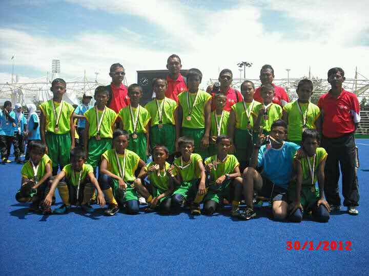
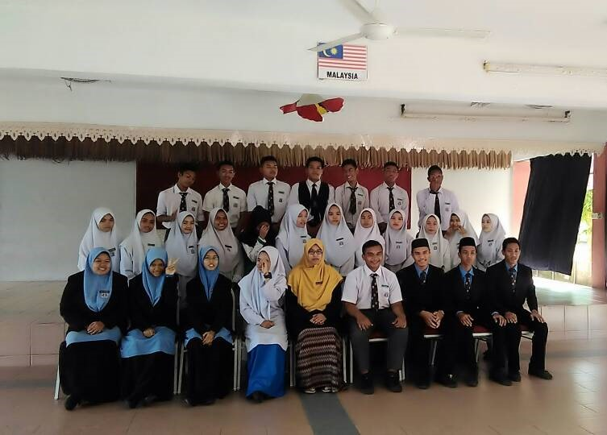
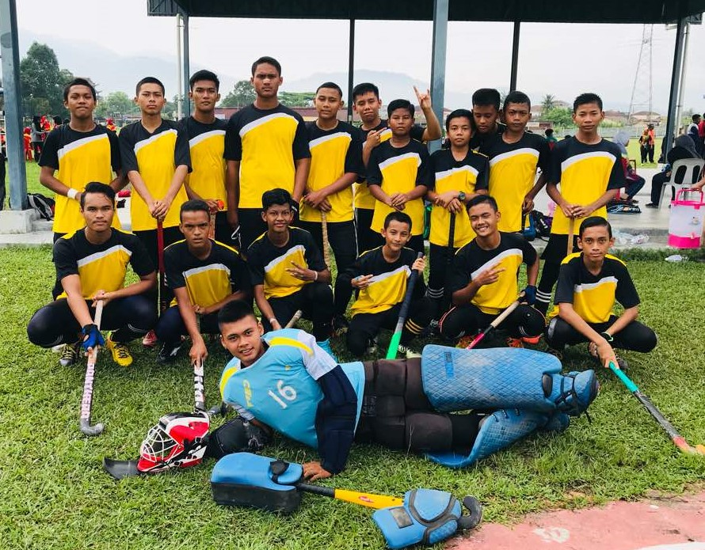
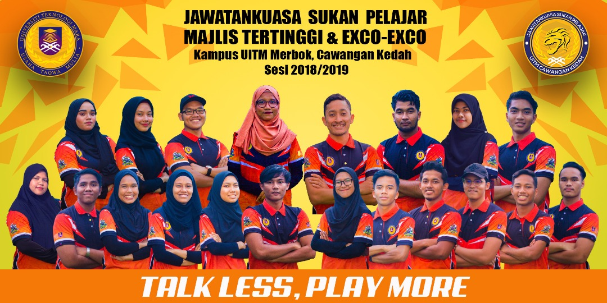
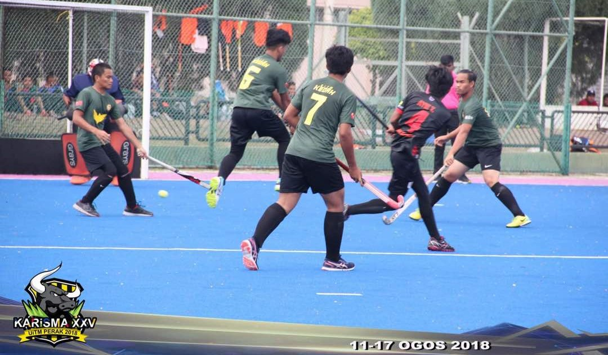
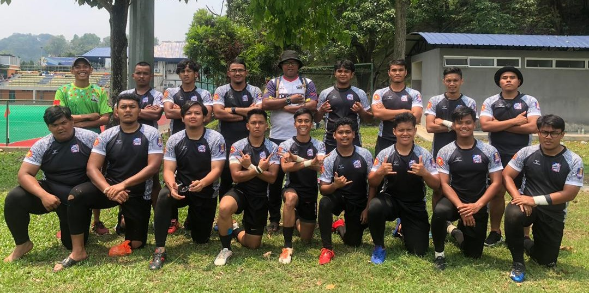

|  | |
| Primary School | |
|---|---|
My primary school is Sekolah Kebangsaan Sungai Tinggi (SKST). That is my school for a 6 years ago. I have learned many things from that school. So, SKST is popular with their hockey teams. And the coach named is En Mazli bin Ismail. Because I want try to play hockey, En Mazli have teach me and choose me as the one of the SKST players. When I’m 12 years old, I have been choosing to play for the MSSD LMS. My team have won that competition where the competition has been held at the Stadium Sultan Shah, Ipoh Perak.
In 2012 also I will take the UPSR examination.So, my mother has send me to the tuition to make sure that I can improve myself. Every day I will make sure that my I will do my homework’s. When the examination is done, I always pray to get a good result. Lastly, for the result I get 1A and 4B. Although my result is not excellent but I am very grateful because I pass all the subject.
|  | |
| Secondary School | |
|---|---|
|  | |
| Tat Beng Hockey Team | |
|---|---|
For my secondary school, I was school at the Sekolah Menengah Kebangsaan Tat Beng (SMKTB). I have been selected as the school prefects while I am form 2. As my primary school, I like to joins sports. So, in secondary school I have join handball, football, hockey and archery. I have been selected in football, handball and hockey for representing my school. Every day after the classes, I need to training. Although I focus on sports, I still give attention in the class because I do not want to fail in study. As we know, there are PT3 examination that all the students form 3 will take it. With my teachers and friends guiding me in learning process I gets 6A for my PT3.
In form 4, I have chosen to get in the literature class. This is because this class is more relaxing and I love art too. In SPM, I have get 5A from 9 subject. I am so grateful because what my hardworking pay off. I also have been selected for the Pelajar Mithali awards. I hope that with my result I can get in the university. After a few months the result come out, finally I get the offered to enter the university. I fill very happy to continues my study at university which is Universiti Teknologi Mara Kedah.
|  | |
| JSP UiTM Kedah | |
|---|---|
When I enter the university which is UiTM Kedah, I have through many things as a student. I was studying in library information which is under the Information Management. In university, what I learn is many things that we need to do by our own. This because we need the wake up early and go to the class by our self. As a student we must know how to arrange our time wisely because it will help us in our study. In semester 1, I begin involve myself in UiTM Sport and one of it is KARISMA. Other than that, I also have been selected as the JSP which is Jawatankuasa Sukan Pelajar UiTM Kedah. As one of the JSP, I have handle many programs for the UiTM until at the International stages. All of this gain my experience and make me more confidents to see others people. Next, I also get know many friends from other campus such as from UiTM Kelantan, UiTM Johor, UiTM Terengganu and etc.
|  | |
| UiTM Kedah vs UiTM N.Sembilan | |
|---|---|
|  | |
| Wildcats Rugby Club | |
|---|---|
I have involved myself in many sports in the UiTM. For example, rugby, hockey, handball and football. I start playing rugby from semester 2. This is because I am very interested to become a rugby player. I am so glad because I have many teammates that always help me from the basic. Every evening I will go for training with UiTM Kedah Wildcats Rugby Club. For now, there are many tournaments that we have play together such Sintok 10 side and others tournaments and not forgotten my sport from the primary school which is hockey, I have been one of the UiTM Kedah hockey player. There are few tournaments that we have participate and bring medal for the UiTM Kedah. I get many benefits from this sports activity. Although I always go for the tournaments, I not forget about my study. My classmates also very helpful when I have problem in the study. I will always make sure that all my assignments will completed although I am busy with many programs. In my course, I have decided to complete my intern at the USAS Library in Kuala Kangsar. Based on my intern, there are many things that I need to do. I need to know how the librarian work. This is important because this will help me in my study. Now I am in the last semester. My hope is I can graduate on time with my friends. Insya Allah.